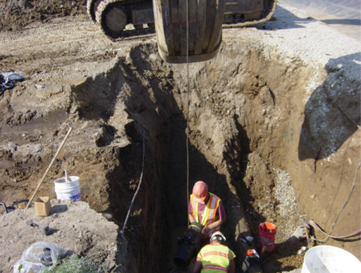
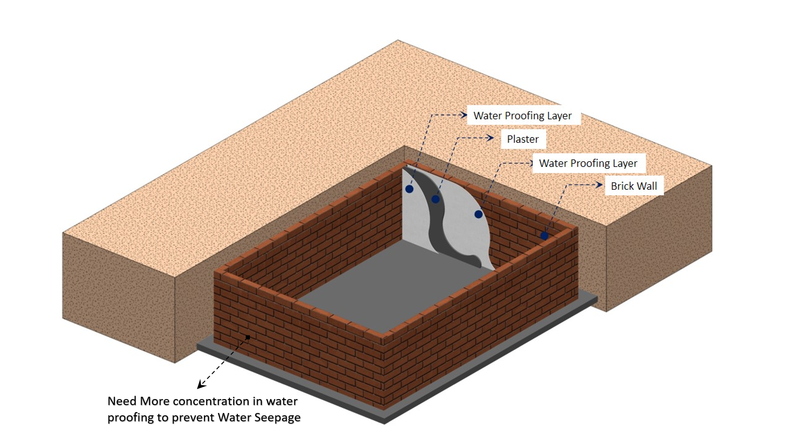
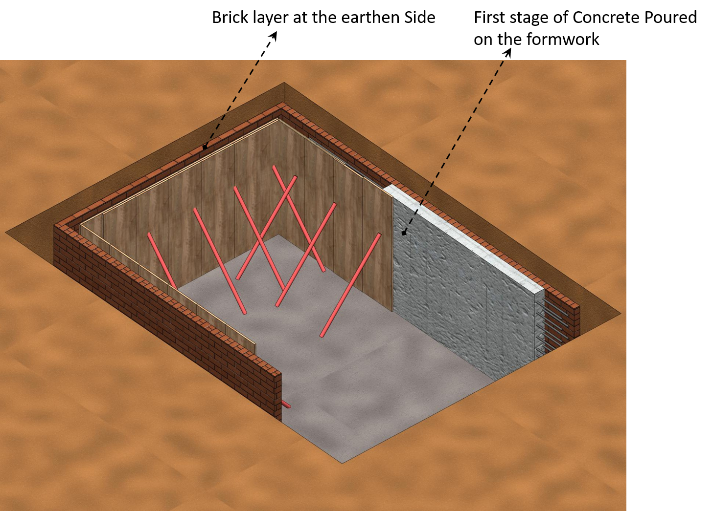
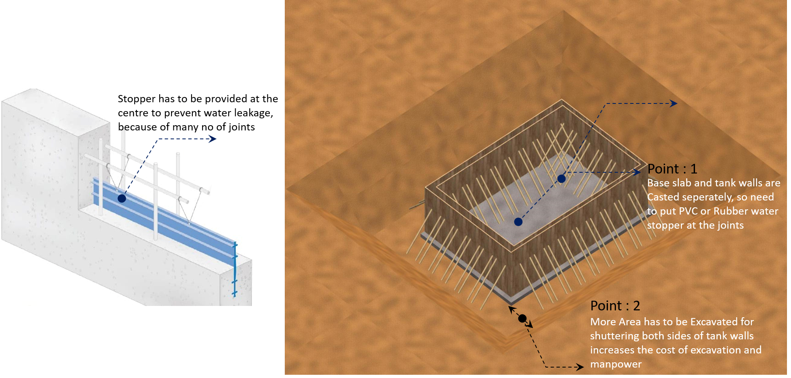
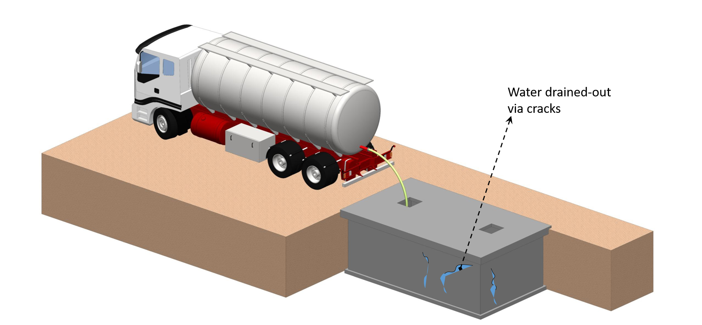
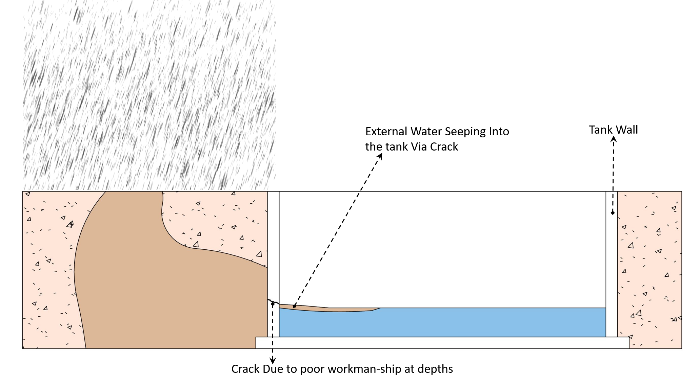
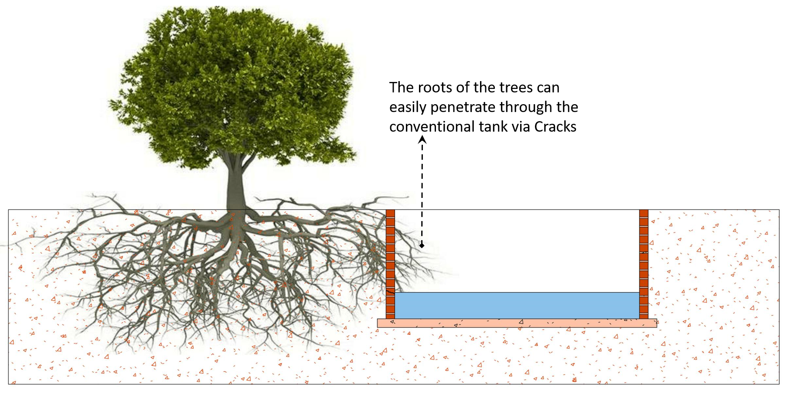
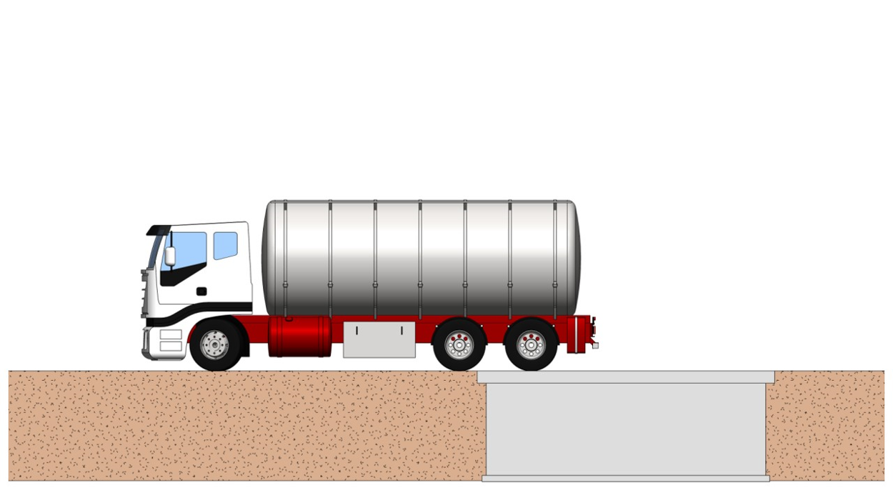
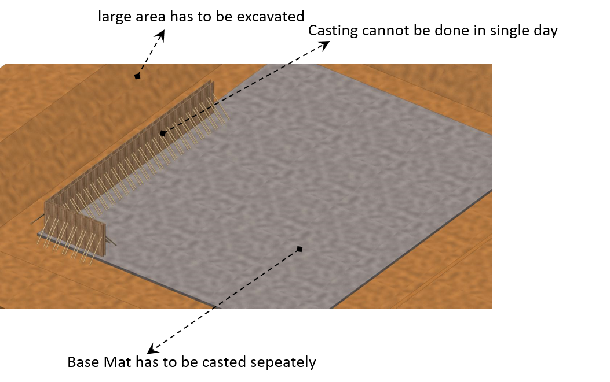
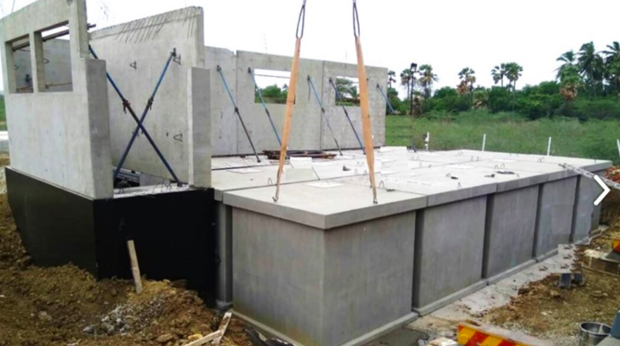

PRECAST ELEVATED WATER TANKS
DIG, DROP AND USE
In the present scenario, water is becoming a very scarce commodity and we should take all measures to store and use it religiously. Considering all this, @ VME, we are offering this product.
The sizes of the tanks have been designed keeping in mind the need for erecting the tanks in congested areas and places with very less clearance. These tanks have also been priced in a manner that it is lower than the cost of the conventional tank.
PRECAST CONCRETE TANKS
INSTALLATION PROCEDURE OF BATTERY OF TANKS
INSTALLATION PROCEDURE OF BATTERY OF TANKS
APPLICATIONS OF PRECAST CONCRETE UNDERGROUND FRESH WATER TANKS
- Water storage tank for domestic, Industrial use
- Rain water harvesting tanks
- Fire fighting tanks
- Fish Culture
ADVANTAGES OF PRECAST TANKS OVER CONVENTIONAL SYSTEMS
1. Precast concrete tanks are quick to build when compared with a conventional tank & the danger of working in deep pits for longer duration is avoided.

CONVENTIONAL SYSTEM - TYPE 1
Poor workmanship: There is a huge shortage of quality manpower and it will not be possible to check closely and also difficult to access the place behind the wall, towards the earthen side.

CONVENTIONAL SYSTEM - TYPE 2

CONVENTIONAL SYSTEM - TYPE 3

COMMON PROBLEMS FACED IN CONVENTIONAL TANKS
When Concrete dries, the moisture lose from it’s fine pores resulting in shrinkage. Shrinkage is restrained by subgrade or foundation thus develops the internal tensile stresses. Concrete is weak in tension, when the internal tensile stresses exceeds the tensile strength, concrete will crack

Same way, external water is seeping into the tank and contaminating it. As a result, people using this water, fall sick

Roots of trees, plants are penetrating through the cracks and damaging the walls, which cannot be repaired – life of precast tank is more when compared to conventional site made brick/concrete tanks

In precast System, Cars, trucks can move over it immediately after placing, whereas the same is not possible in conventional tank.

When a large tank has to be constructed, entire area has to be excavated and lot of protective works have to be done. Whereas in our case, we can go step by step and have a battery of tanks.
CONVENTIONAL SYSTEM

PRECAST SYSTEM

When it is battery of tanks, cleaning is also easy. One tank can be shut and others can be used. This is done without stopping the operation. Also low maintenance costs.But in Conventional it is not possible
ADVANTAGES OF BATTERY OF TANKS
- If tank is not required in a place, even after several years, the tank can be lifted and replaced in a new location.
- In construction sites, this tank be placed on the ground and used to store construction water and then buried as a water tank.
- All the temporary construction works require tanks in labour accommodation, curing the concrete etc., Instead of going for plastic tanks, these will have a long life and economical in the long run.
- When plastic tanks are exposed to sunlight, water starts to taste bad and drinking such water stored in low grade plastic tanks can lead to health hazards